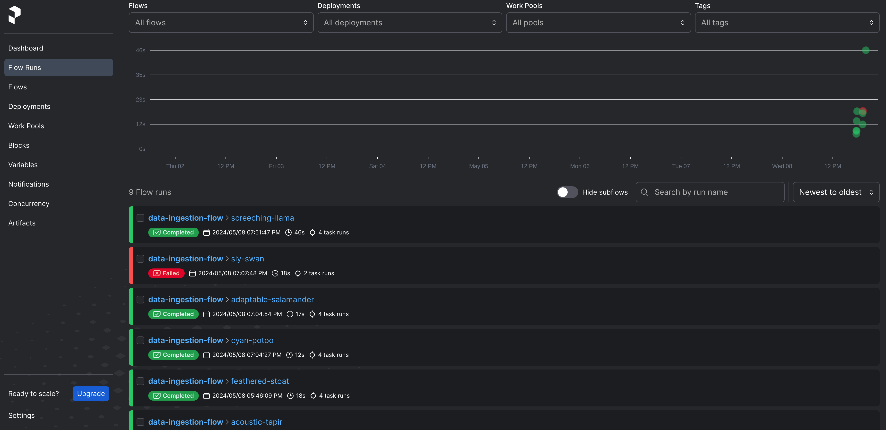

Tech Blog: Data Ingestion using Prefect for workflow orchestration
Posted by Abhishek R. S. on 2024-05-09, updated on 2024-05-09
The blog is about...
Workflow orchestration using Prefect.
1.1) Prefect Setup
The installation of Prefect is pretty straight-forward.
Run the following command to install prefect.
pip install -U prefect
1.2) Starting the prefect server
The following command can be used to start the prefect server.
prefect server start
To configure prefect server, run the following command.
prefect config set PREFECT_API_URL=http://127.0.0.1:4200/api
The following error may appear.
sqlalchemy.exc.OperationalError: (sqlite3.OperationalError) database is locked
Ignored for now. I have not figured out a solution for this so far.
1.3) Main components of Prefect
Prefect can be used for a orchestrating wide range of scalable data pipeline applications. The main
advantages of using Prefect as a workflow orchestrator are scheduling, caching, retries,
notifications, logging and much more.
The main components of a Prefect workflow are task and flow. Flow is like a container for
workflow logic whereas a task is a discrete work unit in the workflow. A flow connects tasks
that have dependencies on one another. There can also be subflows i.e. a flow within another flow.
For tasks that are very expensive, caching can be leveraged when inputs do not change.
This will definitely come in handy 💪. Also, retries can be leveraged for both flows and tasks.
1.4) Using Prefect for workflow orchestration
I developed a simple data ingestion workflow using Prefect to understand how it can be leveraged.
This is available in my Github repo Data_Ingestion_Prefect.
The following image shows a Prefect dashboard visualization of the registered flows.

The following image shows a Prefect dashboard visualization of a successful flow.
The following image shows a Prefect dashboard visualization of a failed flow.
The following image shows a Prefect dashboard logs of the failed retries for a failed flow.
Main takeaway
I learned to perform workflow orchestration using Prefect with the data ingestion pipeline example.
The main advantage is the simplicity of the usage of Prefect with just Python decorators. The sophistication that
Prefect has to offer like the caching, retries etc., can only be appreciated by using it more and more.
This blog can be used as a reference for deploying complex MLOps and data pipelines using Prefect for orchestration.
To deploying some complex MLOps and data pipelines with Prefect orchestration now 😄.
Next Steps
|